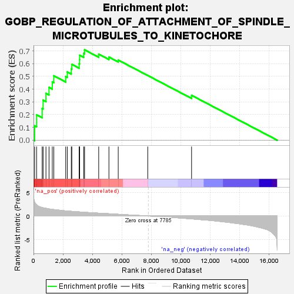
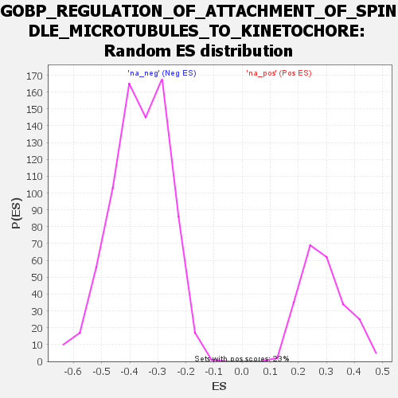

| | | Dataset | all_genes |
| Phenotype | NoPhenotypeAvailable |
| Upregulated in class | na_pos |
| GeneSet | GOBP_REGULATION_OF_ATTACHMENT_OF_SPINDLE_MICROTUBULES_TO_KINETOCHORE |
| Enrichment Score (ES) | 0.70891225 |
| Normalized Enrichment Score (NES) | 2.4548242 |
| Nominal p-value | 0.0 |
| FDR q-value | 8.706676E-4 |
| FWER p-Value | 0.004 |
Table: GSEA Results Summary

Fig 1: Enrichment plot: GOBP_REGULATION_OF_ATTACHMENT_OF_SPINDLE_MICROTUBULES_TO_KINETOCHORE
Profile of the Running ES Score & Positions of GeneSet Members on the Rank Ordered List

Fig 2: GOBP_REGULATION_OF_ATTACHMENT_OF_SPINDLE_MICROTUBULES_TO_KINETOCHORE: Random ES distribution
Gene set null distribution of ES for GOBP_REGULATION_OF_ATTACHMENT_OF_SPINDLE_MICROTUBULES_TO_KINETOCHORE